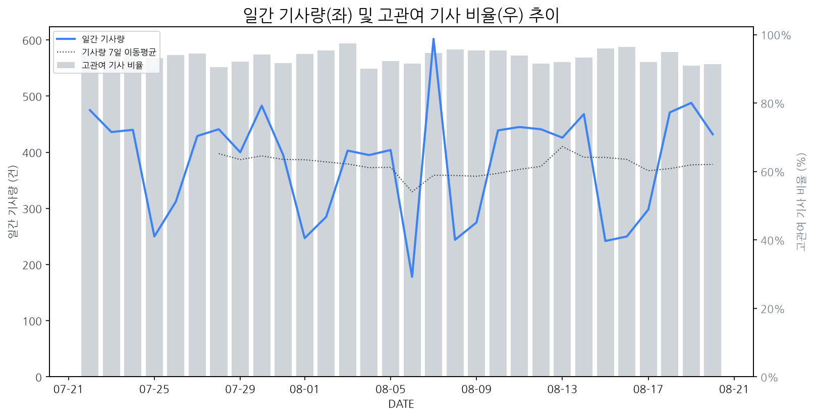

1
시장 활동 지표
기사량 추세 & 이상 징후 탐지
시장의 '전체 기사량'이 평소보다 비정상적으로 급증했는지(Spike)를 차트로 확인하고, LLM이 분석한 급등의 핵심 원인을 파악할 수 있음

고관여 기사란? 산업 연관 키워드로 수집된 기사들 중 디스플레이 키워드에 가중치를 반영하여 도출된 관련성 높은 기사
수집된 기사 수 (2026-08-20)
432
+1% WoW
기사량 변동 수준 (7일 이동평균 대비)
±6.7% 이하
2
오늘의 키워드
급격한 관심 ↑, 주목해야 할 키워드
1
레노버
+5.5σ
한국 레노버가 오늘의집 북촌에서 AI 팝업스토어를 열며 신제품을 선보여 주목받고 있습니다.
Related Metrics
금일 언급량: 19, 전일 대비: +19
Interpretation
AI 기기 수요 증가
Next Step
핵심 토픽 'IT_OLED_Topic' 관련 신호입니다. 3번 섹션(키워드 감성분석)에서 해당 토픽의 감성 변동을 교차 확인하세요.
2
ar
+2.7σ
에이수스의 게이밍 AR 글래스 출시로 AR 글래스 시장 관심 급증
Related Metrics
금일 언급량: 11, 전일 대비: +11
Interpretation
AR 글래스 시장 성장 기대
Next Step
'ar' 관련 상세 기사 및 경쟁사 반응 모니터링
3
갤럭시
+2.0σ
갤럭시 신제품 공개 및 폴더블폰 관련 긍정적 이슈 부각으로 관심 집중.
Related Metrics
금일 언급량: 9, 전일 대비: +8
Interpretation
폴더블 시장 성장 기대
Next Step
'갤럭시' 관련 상세 기사 및 경쟁사 반응 모니터링
4
fhd
+1.6σ
팅크웨어의 신규 FHD 블랙박스 출시가 FHD 디스플레이 수요 증가에 대한 시장 기대감을 반영합니다.
Related Metrics
금일 언급량: 3, 전일 대비: +3
Interpretation
FHD 수요 증가 기대
Next Step
'fhd' 관련 상세 기사 및 경쟁사 반응 모니터링
3
실시간 Risk 키워드
경계해야 할 시그널 탐지
특정 토픽의 부정 감성 점수가 급등할 때 이를 즉시 탐지하고, "근거 기사" 링크를 통해 리스크의 실체를 빠르게 파악할 수 있음
키워드 분석 결과, 오늘은 걱정할 만한 하락 신호가 없습니다. (부정 언급량 변화: +1.5σ 이내)
4
주요 이벤트 모니터링
실시간 산업 동향 파악을 위한 주요 활동
최근 발생한 주요 기업들의 신제품 출시, 투자 등 주요 이벤트를 제공하여 매일 경쟁사 동향을 확인할 수 있음
한성컴퓨터가 게이머의 취향을 공략하는 27인치 QD-OLED 4K 게이밍 모니터를 출시했다. 이번 신제품은 흰색 디자인을 채택하여 시각적 차별화를 꾀했다.
Impact
QD-OLED 패널 채택 모니터 라인업 확대는 프리미엄 게이밍 모니터 시장 경쟁을 심화시키고, 소비자 선택의 폭을 넓힐 것으로 예상된다.
Next Step
QD-OLED 기술 및 디자인 경쟁력 강화, 또는 차별화된 신규 패널 기술 개발을 고려해야 한다.
최근 '여권형 폴드' 디자인이 시장에서 인기를 얻고 있으며, 이는 갤럭시 제품이 처음 도입한 형태는 아니지만 새로운 주목을 받고 있습니다. 이러한 인기는 기존 폴더블 폰 디자인에 대한 소비자 경험과 기술적 개선이 복합적으로 작용한 결과로 분석됩니다.
Impact
여권형 폴드의 성공적인 시장 안착은 향후 폴더블 디스플레이 시장의 디자인 트렌드를 변화시키고, 관련 부품 및 기술 개발 경쟁을 더욱 심화시킬 것으로 예상됩니다.
Next Step
디스플레이 제조 기업은 여권형 폴드 디자인에 최적화된 내구성과 폼팩터 구현 기술 개발에 집중하고, 잠재 고객층 확대를 위한 맞춤형 디스플레이 솔루션 연구를 시작해야 합니다.
중국은 메모리 반도체 분야에서 삼성전자와 SK하이닉스를 추격하기 위해 대규모 투자를 진행하고 있습니다. 이는 중국 정부의 강력한 지원과 정책적 의지가 반영된 결과입니다.
Impact
중국의 메모리 반도체 기술력 향상은 디스플레이 패널 제조에 필요한 핵심 부품의 공급망 안정성 및 가격 경쟁에 장기적인 영향을 미칠 수 있습니다.
Next Step
중국 기업의 반도체 기술 발전 속도를 면밀히 주시하며, 디스플레이 패널 제조 시 핵심 반도체 부품의 안정적인 확보 및 다변화 전략을 강구해야 합니다.
인텔이 대만 TSMC의 2나노 공정 도입을 확대할 것이라는 관측이 제기되었습니다. 이는 차세대 PC 칩 생산을 위한 계획의 일환으로 분석됩니다.
Impact
차세대 PC 칩의 성능 향상 및 전력 효율성 개선은 고해상도, 고주사율 등 고품질 디스플레이에 대한 수요 증가를 견인할 수 있습니다.
Next Step
차세대 칩과 호환되는 고성능 디스플레이 기술 개발 및 생산 능력 확보를 검토해야 합니다.